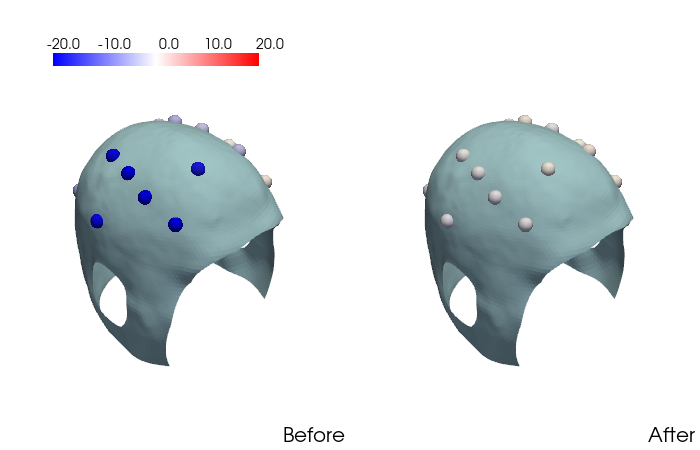

Note
Go to the end to download the full example code
03. Helmet field mapping¶
Example demonstrating how to map the background field on the helmet.
Isotrak not found
Total remnant field: 4.754542350769043
# Authors: Mainak Jas <mjas@mgh.harvard.edu>
# Padma Sundaram <padma@nmr.mgh.harvard.edu>
import json
from pathlib import Path
import matplotlib.pyplot as plt
import numpy as np
import mne
import pyvista as pv
import pyvistaqt as pvqt
project_dir = Path.cwd() / 'data'
info_fname = project_dir / 'helmet_99channel_size-60.fif'
fnames = [project_dir / 'Bxyz_0mA.txt',
project_dir / 'Bxyz_optimized.txt']
mapping_fname = 'mapping.json'
surf_fname = 'helmet100_rhino_cuts.stl'
pv.global_theme.cmap = 'bwr'
info = mne.io.read_info(info_fname)
bias = {'00:01': -0.06, '00:03': -0.74, '00:04': 0.51, '00:08': -0.43,
'00:11': 0.11, '00:14': -0.13, '00:07': -0.42, '00:15': 1.23,
'00:16': 0.07, '01:01': 0.42, '01:03': 0.19, '01:04': 0.02,
'01:06': 0.22, '01:08': -0.33, '01:09': 0.30, '01:10': -0.12,
'01:10': -0.12, '01:13': -1.95, '01:14': 0.65, '01:15': 0.27, # 1:13 old bias = -0.15
'01:16': 0.62}
def get_good_channels(fnames):
good_ch_mask = None
for fname in fnames:
X = np.loadtxt(fname,
[('ch_name', 'U5'), ('Bx', '<f4'),
('By', '<f4'), ('Bz', '<f4'), ('Cal', '<f4')])
if good_ch_mask is None:
good_ch_mask = ~np.isnan(X['Bx'])
else:
good_ch_mask = good_ch_mask & (~np.isnan(X['Bx']))
return good_ch_mask
data = dict()
labels = ['Before', 'After']
good_ch_mask = get_good_channels(fnames)
for fname, label in zip(fnames, labels):
X = np.loadtxt(fname,
[('ch_name', 'U5'), ('Bx', '<f4'),
('By', '<f4'), ('Bz', '<f4'), ('Cal', '<f4')])
X = X[good_ch_mask]
offset = np.array([bias[ch] for ch in X['ch_name']])
X['Bz'] -= offset
data[label] = X
print(f'Total remnant field: {np.linalg.norm(X["Bz"])}')
with open(project_dir / mapping_fname, 'r') as fp:
mapping = json.load(fp)
plotters = pv.Plotter(shape=(1, 2), window_size=(700, 450),
border_color='w')
for plot_idx, label in enumerate(labels):
plotters.subplot(0, plot_idx)
locs = list()
Bz = list()
for this_X in data[label]:
ch = this_X[0]
Bz.append(this_X[3])
holder = mapping[ch]
holder_idx = info['ch_names'].index(f'A{holder}')
chs = info['chs'][holder_idx]
ch_loc = chs['loc'][:3] - 5 * chs['loc'][9:12]
locs.append(ch_loc)
locs = np.array(locs)
reader = pv.get_reader(project_dir / surf_fname)
mesh = reader.read()
plotters.add_mesh(mesh, opacity=1.)
pdata = pv.PolyData(locs)
pdata['values'] = Bz
plotters.add_mesh(pdata, scalars="values", point_size=15.0,
render_points_as_spheres=True, show_scalar_bar=False,
clim=(-20, 20))
_ = plotters.add_scalar_bar('', interactive=False, vertical=False,
title_font_size=10, label_font_size=14,
fmt='%10.1f', position_x=0.15, position_y=0.85,
width=0.6)
plotters.add_text(label, font_size=8, position='lower_right')
plotters.link_views()
plotters.show()
Total running time of the script: (0 minutes 2.800 seconds)